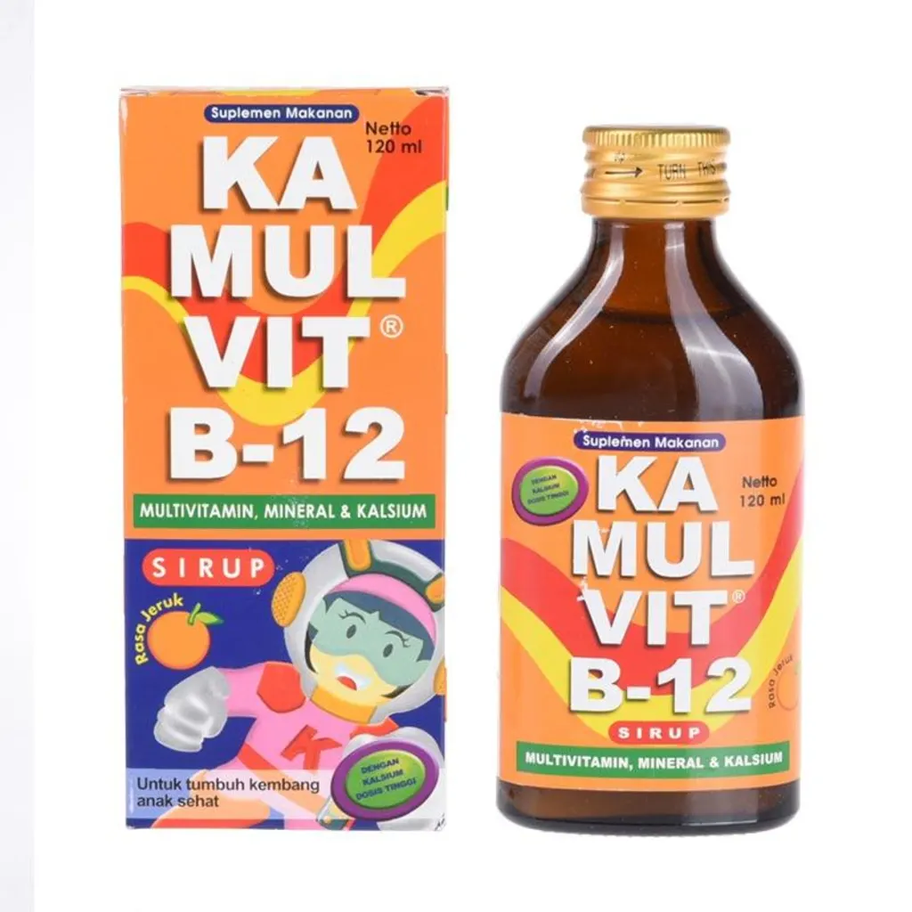
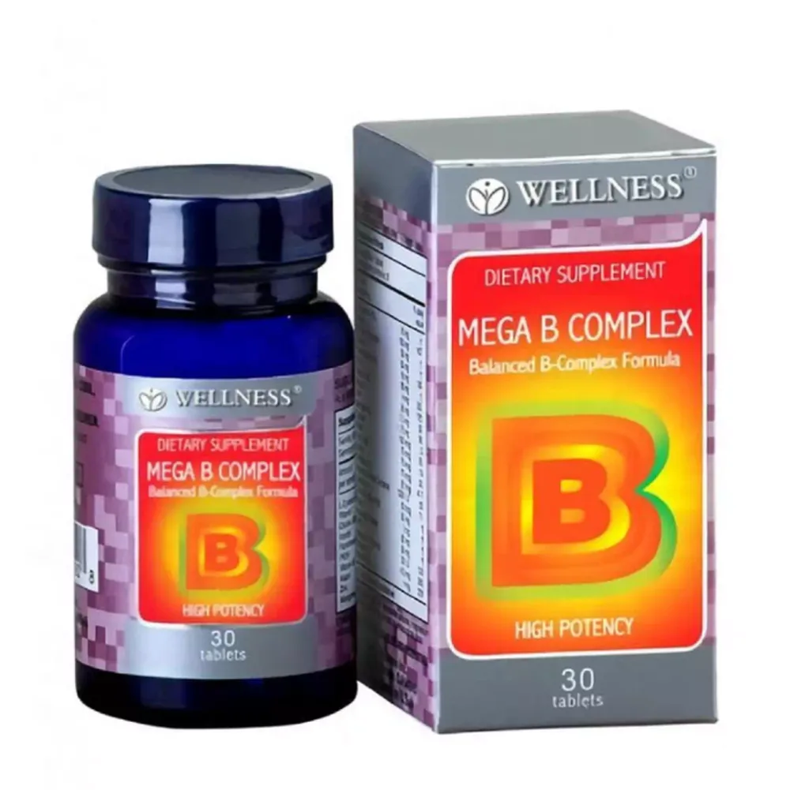
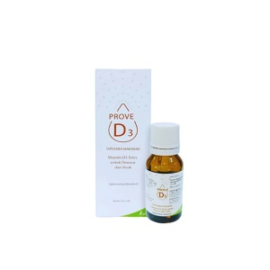
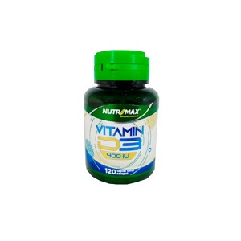
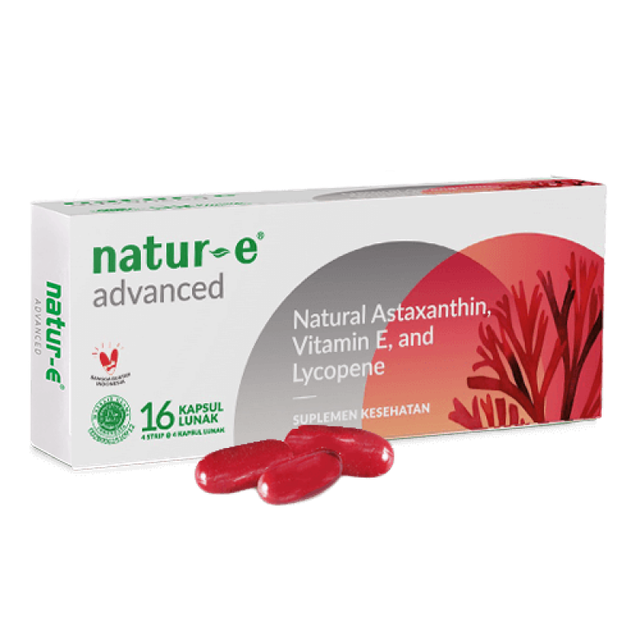

V I T A M I N
-

Vitamin A 200.000 IU Kimia Farma
-

EyeFit
-

KAMULVIT B-12 Sirup productnation
-

WELLNESS Mega B Complex productnation
-

Sido Muncul Vitamin C-1000
-

Vitacimin Tablet
-

Nutrimax Vitamin D3 400 IU
-

Prove D3 Drops
-

EVER E250
-

Advanced Soft Capsule 16s